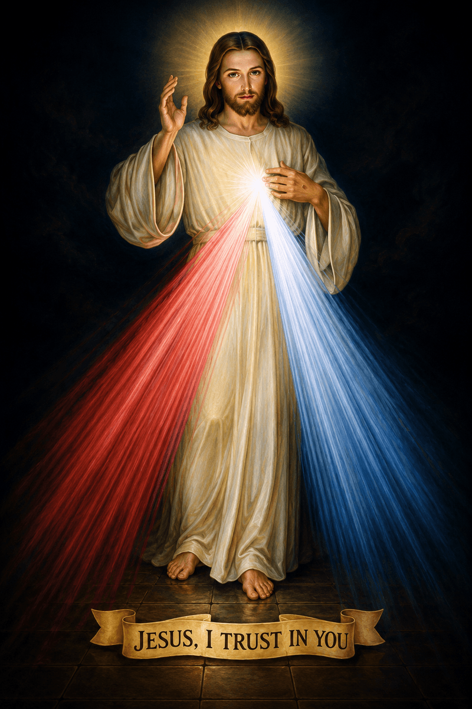
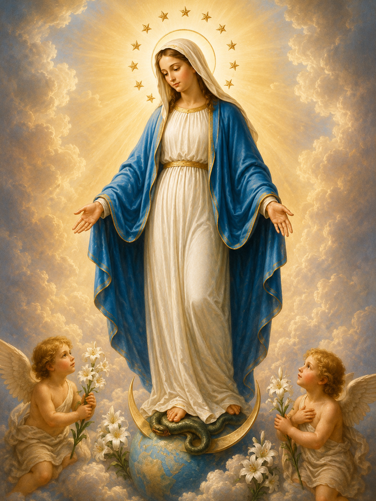

Nine Days of Prayer
Pray a Novena
Choose a novena below to begin nine days of focused prayer and meditation.

9 Days
Sacred Heart Novena
A novena to the Sacred Heart of Jesus, seeking His love, mercy, and guidance.
Start Novena
9 Days
Our Lady of the Rosary
Honoring the Blessed Virgin Mary through the Rosary novena for her intercession.
Start Novena
9 Days
St. Joseph Novena
Seeking the intercession of St. Joseph, patron of the universal Church and workers.
Start Novena
9 Days
Divine Mercy Novena
Praying for God's mercy upon the whole world as revealed to St. Faustina.
Start Novena
9 Days
Holy Spirit Novena
Invoking the gifts of the Holy Spirit for guidance, wisdom, and renewal.
Start Novena
9 Days
Immaculate Conception
Honoring the Immaculate Conception of the Blessed Virgin Mary.
Start Novena